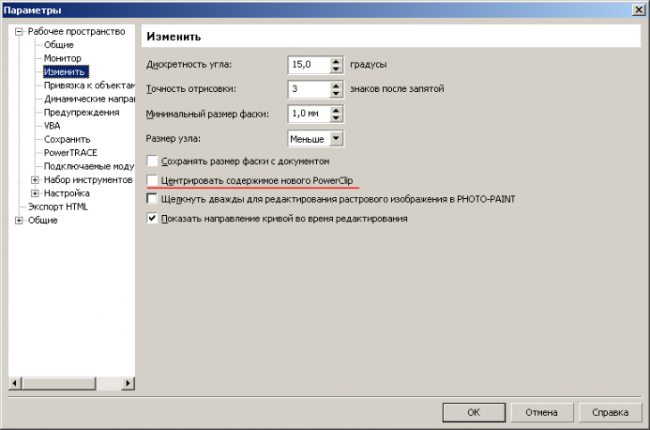

ВОПРОС / ОТВЕТ ДЛЯ НАЧИНАЮЩИХ
polzovatel-902 / 13.07.2010, 09:21/00:41
Форум:
Объясню на примере, чтоб было понятней... Открываю в кореле картинку (футболку с надписью) в формате JPG, мне нужно вытянуть из футболки надпись, т.е разъеденить файл... Говорят нужно формат изменить, еще что-то... Объясните, пожалуйста, что нужно сделать для этого...? Заранее спасибо.
Здравствуйте! До сих пор работала в Х3, сейчас поставили Х5. При импорте JPEG картинка размером 10х15 импортируется с размером в 40 раз больше. Видимо, надо ставить какие-то настройки, но не знаю как.
Shanty, изображения импортируются исходя из их реального размера (вычисляется на основе dpi и размера в пикселях). Если изображение получается большим, значит такие у него параметры.
Я тоже такое замечал. Но только для JPEG. Какое бы ни было разрешение исходного файла, при импорте в CorelDraw, оно сбрасывается на 72 dpi. Размер в пикселах, естественно, сохраняется и, поэтому, размер пересчитывается, исходя из нового разрешения. Не в 40 раз, а в R/72 раз. Где R — исходное разрешение файла.
Файлы TIFF или PSD открываются корректно.
Но и это еще не всё! Если JPEG был сохранен в Corel Photo-Paint, то импорт в Draw происходит корректно.
Вывод: еще один плюс в пользу связки Draw-PhotoPaint. Тем более, что деньги-то за всю Graphic Suite заплачены :)
Афи, спасибо, все стало понятно, но не легче)))). Все таки с растром я работаю в Фотошопе. Уже очень пожалела, что поставила Х5, очень много для меня неудобств.
Shanty, а разве в X3 было не так? Мне кажется, эта "тонкость" присуща всем версиям CorelDraw. Проверьте.
Если же я ошибаюсь, то, что ж, у вас есть такие варианты:
1) вернуться к X3
2) использовать Photo-Paint
3) вместо JPEG использовать, например, TIFF
4) при импорте JPEG сразу устанавливать для него нужные размеры. Это ведь не долго? Можно сделать маленький макросик, который при нажатии одной кнопки или каких-нибудь горячих клавиш будет сразу масштабировать импортированный растр.
Удачи!
Афи, до прошлой недели сидела в Х3, и там действительно "было не так"))), иначе это не было бы для меня проблемой сейчас. Спасибо Вам за подробный ответ!
Подскажите относительно PowerClip.
Меня интересует почему когда я определенную область на изображении хочу вырезать, допустим где-то в углу фотки, выбираю поместить в контейнер, а corel вырезает не из указанного мной места, а из самой середины изображения. Хочу допустим человека вырезать сбоку, а он море оставляет в силуэте человека. почему так, как изменить, где эти настройки??? На ноуте русская версия, там нормально все, а на домашнем компе английская и такая подстава)
зайди в опции и убери эту галочку

Спасибо большое)
Здравствуйте. Подскажите пожалуйста, вот такая ситуация: я живу и работаю в Казахстане, приходится иметь дело не только с русским и английским языками, но и с казахским. Он всегда стоял на компе ровно, никаких происшествий, и вот с недавнего времени Corel стал выдавать вот такие ошибки: см. изображения.
Причем далко не на все файлы. И текст казахского языка не переносится с включением опции «переноса». Также слетел один шрифт, теперь каз. яз. не показывает ((( Все остальные работают нормально.
Так вот собственно вопрос - что это может быть, может кто-то еще делает файлы на других языках и сталкивался с подобным?
Буду очень признательна за помощь. Спасибо.
Страницы